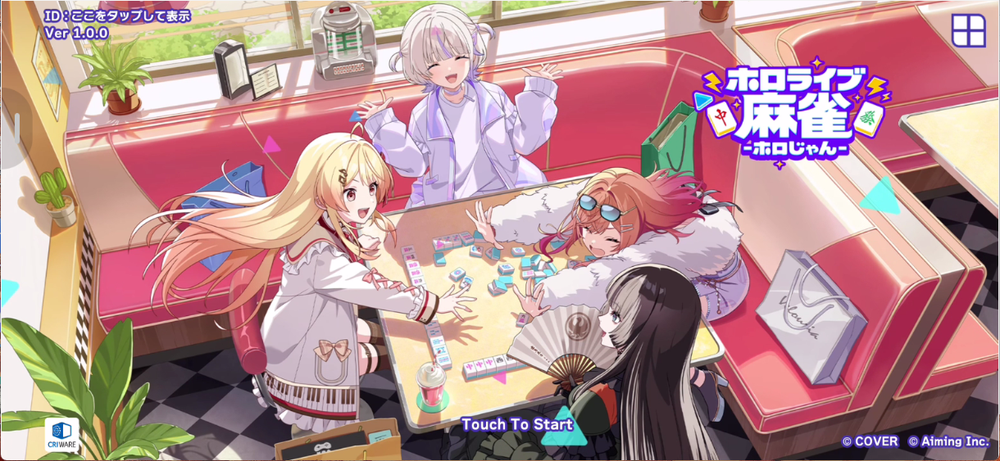
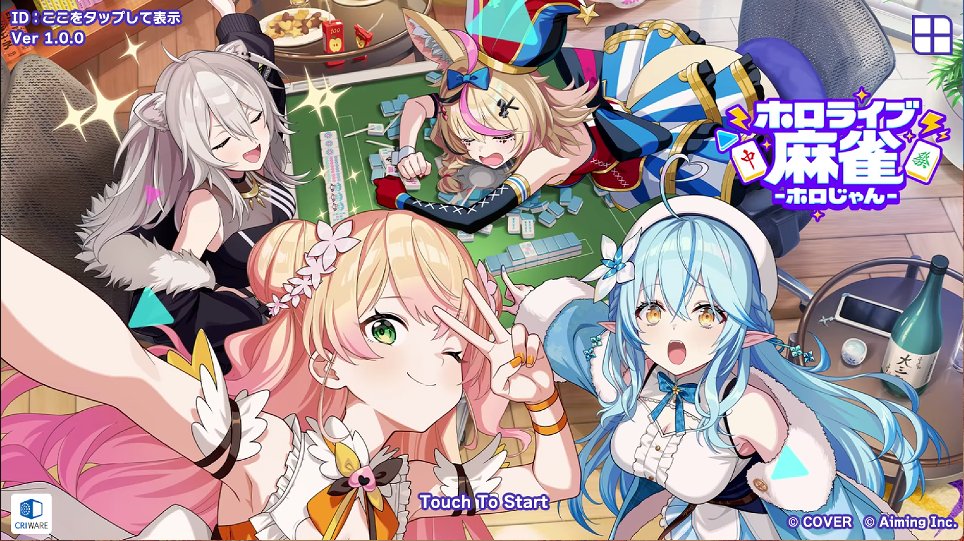
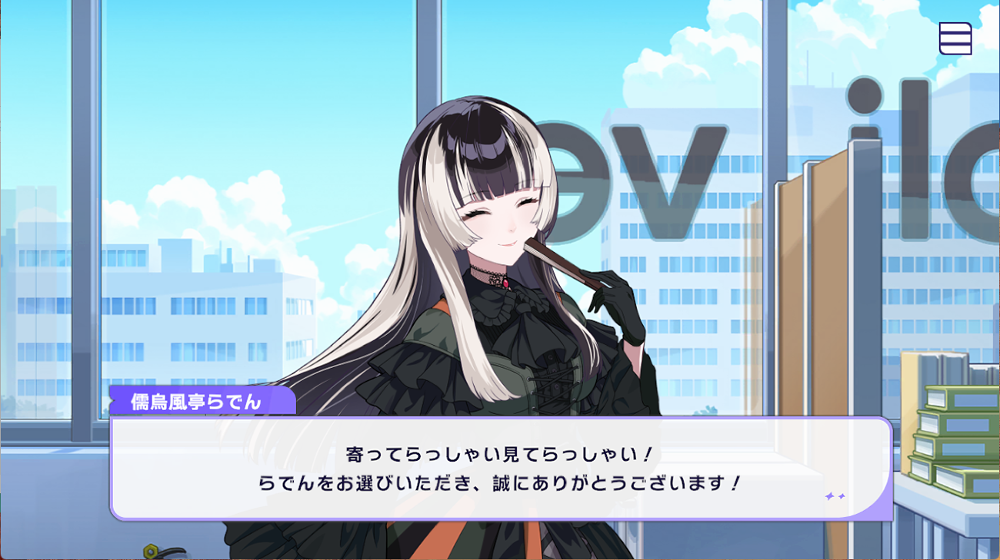

#ホロじゃん をやるために Windows に Android ゲームを入れた話

ホロライブのコンテンツ（VTuber）を使った麻雀ゲーム「ホロじゃん」がリリースされた。
ところがこれ Android 端末か iOS 端末にしか対応していない。 切実に Steam 版が欲しいところであるが，こればっかりは仕方ない。 でもスマホやタブレットでやる気はないので，どうにかパソコン上で動かせないものか。
スマホ画面をミラーリングする
最初に考えたのはスマホ画面をパソコン上にミラーリングする方法。 可能なら操作もパソコン上でやりたい。
この辺の知識についてはミリしら状態なので Kagi Assistant に訊いてみたら scrcpy か， Windows 環境であればスマートフォン連携機能を勧められた。
scrcpy は Ubuntu でも使えるので魅力的だが，端末側を USB デバッグモードにする必要があるため少し躊躇する。 幸い Windows が動くミニ PC があるので，こいつでスマートフォン連携のほうを試してみることにした。
設定自体は特に苦もなく完了。 スマホに「ホロじゃん」をインストールして起動した状態でミラーリングしてみる。


とりあえず問題なさそう。 操作もマウスで問題なくできる。 ただ，スマホが結構熱くなるのな。 どんだけ負荷かかってるのか。
ミラーリングはスジが悪いようだ。
Google Play Games を導入する
それから公式 Discord チャネル1 を眺めてたのだが，どうやら Windows では Google Play Games というアプリを導入すると Android ゲームをパソコン上で動かせるらしい。 「ホロじゃん」もこれで動くそうだ。
さっそく Google Play Games をインストールして，「ホロじゃん」を動かしてみた。


おぉ！ できたできた。 操作も問題なし。 F11 キーで全画面表示にもできる。 今の Windows ってこういうことができるんだねぇ。 便利になったもんだ。
私は一応でん同士なので，彼女を選択。


ただ Google Play Games ではアイテム購入等が上手くできない感じ？ 私はほぼ無課金ユーザなので困らないが。 まぁ，いざとなったらスマホ側で課金すればいいか（アカウント連携や引き継ぎをすれば，複数の端末からアクセスできる）。
さて，心置きなく遊びますかね。 久しぶりに遊んでみたい麻雀ゲームに出会ったよ。
ブックマーク
-
「ホロじゃん」の公式 Discord チャネルは，公式 Web ページ の アイコンのリンクから招待を受けられる。 Discord 側で 𝕏 公式アカウントのポストも閲覧できるのが素晴らしい。 ↩︎